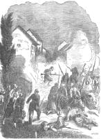

|
Per quanto il combattimento
di Melegnano dell'8 giugno 1859, sia già noto in tutti i suoi particolari,
pubblichiamo ancora una versione, origniale nel suo genere, mai apparsa
nelle nostre rievocazioni, tratta da "La guerre d'Italie - Histoire
complète des opérations militaires dans la péninsule"
di Charles Adam "officier de l'ancienne arnée, auteur de plusieurs
livres sur l'art militaire". Con un intiero capitolo l'Autore tratta
la cronaca dello scontro di Melegnano con ridondante e puntigliosa narrazione
dei fatti d'arme sorprendendo il lettore per le particolarità contenute.
"Marignan", scrive Adam, segnato sulle carte col nome di Melegnano,
è a circa 15 miglia da Milano... (...) "è circondato,
venendo da Milano, dal lambro, piccolo fiume che alimenta due canali,
larghi tre metri che fiancheggiano la strada per parecchi chilometri.
Sulla sinistra ci sono dei campi sempre affiancati e tagliati da alberi,
a destra magnifici campi ombreggiati da salici, e bagnati da corsi d'acqua,
che nei pressi di Mezzano, circondano la pianura e la trsformano in risaia.
L'antica Marignan, di cui resta qualche fortificazione, era quasi una
postazione per gli austriaci. Il nemico (gli Imperiali) vi si era stabilito
così come a Mezzano per fronteggiare la ritirata del Corpo del
Giulay vinto a Magenta e la fuga della guarnigione da Milano. Tutte le
case, in pochi giorni, erano state trasformate in fortezze, le strade
principali erano barricate, con numerose forze agli incroci. (...)"
Oltre a diversi edifici trasformati in casematte, gli austriaci avevano
occupato anche il castello mediceo, che al tempo del combattimento era
adibito a carcere. Il vasto edificio era posizionato all'estremità
del paese, nella direzione verso Lodi; questa struttura poteva diventare
un importante rifugio oltre che resistere ad un vero e proprio assedio,
come una cittadella fortificata. Continua nella sua narrazione Charles
Adam affermando che "... è in questa cittadella che furono
lanciati gli zuavi, soldati della divisione Bazaine. Erano le cinque del
pomeriggio quando la pianura oscurata dal temporale si illuminò
di lampi. Una barricata si ergeva al di là del piccolo ponte, all'entrata
del paese. Con la loro proverbiale agilità gli zuavi balzarono
sulla barricata, scaricando le loro armi e lanciandosi alla baionetta..."
Gli Imperiali sono sorpresi da questo attacco così violento e si
ritirano, dopo un nutrito scambio di fucileria, verso l'interno. I francesi
sono attaccati dal fianco con un fuoco incrociato proveniente dai tiratori
scelti appostati a ridosso del muro di cinta del cimitero, che si trovava
sul fianco sinistro dello stradale proveniente da Milano. Il 10° Cacciatori
ed il 33° di Linea forniscono all'attacco i loro migliori e più
coraggiosi "tiragliatori" (tiratori) ed in poco più di
mezz'ora gli austriaci sono obbligati a cedere. Dopo aver forzato le barricate
all'inizio del borgo melegnanese, si fece avanti la divisione di fanteria
"de Laudmirault", che con la 1° brigata "Niol"
(da non confondere con il generale Niel che stava a Carpiano), e la 2°
brigata "de Négrier" iniziarono un combattimento di quattro
ore circa, all'interno del borgo, in supporto alle brigate della 3°
divisione "Goze e Dumont".
I francesi si presentavano davanti alle case, forzavano le porte e combattevano
contro gli austriaci corpo a corpo con un'energia ed una forza incredibile.
La resistenza degli Imperiali era altrettanto forte e coraggiosa; anche
quando si videro accerchiati, lottarono fino all'ultimo uomo. Quando i
contendenti, ormai allo stremo delle forze, volgevano alle ultime battute,
dopo l'occupazione della Chiesa, del Municipio e di quasi tutti gli edifici
del centro, i "cacciatori a piedi" e gli zuavi avamnzarono sempre
verso l'interno (...) "...sino a trovarsi di fronte al penitenziario
(il castello) questo gigantesco edificio era circondato da fossati come
una vera e propria fortezza, gli zuavi dovettero attaccare il portone
principale e dopo averlo superato si trovarono in un dedalo di cortili,
di corridoi che essi non conoscevano. Ogni passo poteva condurre ad una
trappola, dietro ogni aprete potevano trovare riparo gli austriaci e colpire...
(...)... arrivò la notte, una pioggia torrenziale inondò
le strade del borgo, e il combattimento non cessava ancora..."
Le batterie della divisione "Forey", che si trovavano ad ovest
del castello fuori dal borgo, continuavano a decimare gli austriaci che
tentavano la fuga per i campi. Ogni copo andava a segno, le strade, i
fossati, i cespugli erano pieni di cadaveri, la pioggia aveva cambiato
i corsi d'acqua in rossi torrenti, decine di cadaveri furono trascinati
lontano. Il cronista afferma infine che "... fu soprattutto nella
pianura, al di là di Melegnano che il nemico (gli Imperiali) fulminato
dalle batterie del Forey aveva sofferto maggiormente. I prigionieri erano
stati fatti all'interno del paese. Così non era raro incontrare
soldati che si vantavano, con ragione, d'aver fatto cinque o sei prigionieri.
Ufficiali e soldati s'erano uniti per conquistare le case, non c'era generale
che non avesse preso parte all'azione. Il generale di divisione Bazaine
fu acclamato da tutti i suoi soldati, e il generale di brigata Niol non
aveva disdegnato di stare fra i soldati prendendo un fucile. Gli abitanti
di Melegnano, nascosti nelle cantine durante la battaglia, uscirono dai
loro nascondigli quando il cannoneggiamnto cessò e offrirono il
loro aiuto ai feriti. Le farmacie furono aperte, le donne avevano portato
delle bende, e dei materassi erano stati portati nelle chiese..."
Un incidente a margine del combattimento di Melegnano merita d'essere
riferito: gli austriaci, irritati per essere continuamente respinti dalle
baionette dei francesi, tentarono anche loro di portare un attacco all'arma
bianca contro i francesi. Un battaglione fu lanciato cotro alcune compagnie
di un reggimento di linea francese, ma il tentativo non ebbe esito felice
in quanto la maggior part degli Imperiali trovò la morte. Gli austriaci
ritenevano il combattimento alla baionetta indegno per una nazione civile,
difatti un ufficiale fatto prigioniero a Meegnano disse a questo proposito:
"... che i turchi si battano all'arma bianca, lo capisco, sono quasi
dei selvaggi, ma i francesi! Non è più una guerra, è
un macello..." A cui un francese rispose che "... il combattimento
alla baionetta è, in effetti, più micidiale che le fucilate,
ma perchè la fanteria francese sa meglio servirsene che gli Austriaci,
questa però non è una buona ragione perchè lasci
le baionette nel fodero..." Vi era un altro motivo perchè
nel combattimento di Melegnano prevalesse l'assalto alla baionetta piuttosto
che il semplice uso del cannone.
Infatti Adam conferma che "... se le nostre armate liberavano i paesi
occupati dagli austriaci con la baionetta, era per risparmiare le proprietà
degli abitanti. Con i nuovi cannoni, che hanno una portata di 3000 metri,
avrebbe potuto fare più in fretta a schiacciare il nemico sotto
i muri delle case che marciare contro di lui con le baionette, e avrebbe
perso molti soldati in meno; ma non si voleva che l'armata francese segnasse
il suo passaggio con delle rovine in un paese che stava liberando. Il
generale Forey non aveva usato la sua artiglieria a Melegnano se non dopo
che il corpo d'Armata di Benedeck fu in ritirata nelle campagne. La situazione
di un'armata in un paese amico ha senza dubbio dei vantaggi, ma vi sono
anche degli inconvenienti..."
|
|

L'attacco
al Ponte di Milano: illustrazione tratta da "Storia della Campagna
d'Italia nel 1859" di Rinaldo Croci (Archivio Vitantonio Palmisano)
|